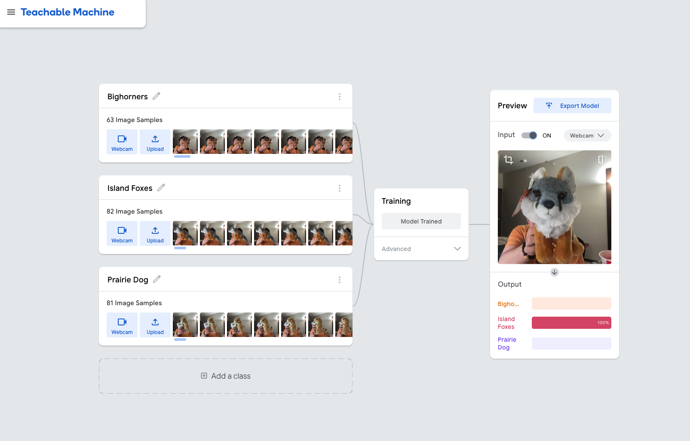
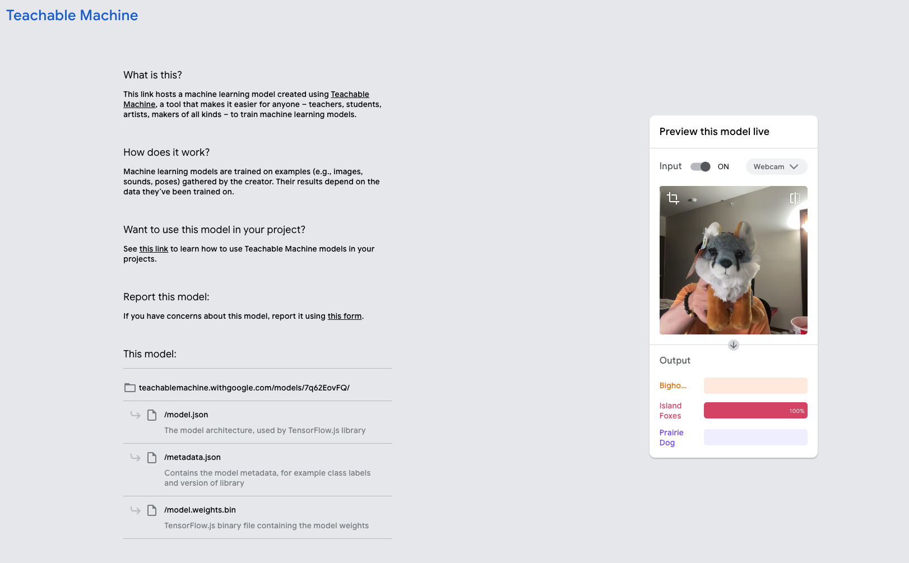

Project Overview
Our project was inspired by a shared passion for national parks and wildlife. As a team of three members who frequently explore national parks, we have always been fascinated by the diverse wildlife we encounter during our adventures. This love for nature served as the foundation for our project idea: utilizing the Teachable Machine platform to create a model capable of classifying three types of wildlife. Through this project, we aimed to leverage technology to enhance the understanding and appreciation of wildlife, while also providing a practical tool for identifying these animals. The project not only reflects our enthusiasm for the natural world but also highlights how machine learning can be used to promote education and awareness in outdoor environments.
Reflections
Working on this project provided us with a hands-on understanding of the complexities of developing ethical AI. Buolamwini’s idea that "AI systems are mirrors of power" resonated deeply as we realized that even small decisions—such as how to label data or prioritize features—can carry significant societal implications. Our reliance on toy models and controlled environments highlighted how resource constraints can introduce biases, as these settings simplified real-world conditions and limited the diversity of our training data.
This experience reinforced the importance of transparency and iteration in ethical AI development. While creating a perfectly unbiased model is impossible, we learned that acknowledging limitations and openly addressing challenges are critical steps in responsible design. By reflecting on the ethical implications of our decisions, we aim to contribute to the broader conversation about building inclusive and fair AI systems.
Algorithmic Bias is Pervasive and Powerful
Buolamwini's emphasis on how algorithms can reinforce systemic biases was a profound insight. Her example of facial recognition systems failing to identify women and people of color highlighted how data and design choices can marginalize communities. This inspired us to critically audit our own dataset, even though our project was relatively small in scale. For example, while using toy models of animals, we considered whether the specific designs of these toys—such as exaggerated or cartoonish features—might inadvertently lead to biases in our model's perception of real-world animals.
We also explored how background diversity impacted classification accuracy. If all training images were taken against plain or similar backdrops, the model might struggle with generalizing to real-world environments. To mitigate this, we rotated toys against a variety of backgrounds, from patterned fabrics to textured walls. These steps reflected our awareness of the risks that unchecked biases, even in small-scale projects, could propagate into larger systems.
Transparency and Accountability are Essential
The book underscored the danger of "black box" algorithms, where decisions are made without providing insight into how they were reached. This highlighted the need for transparency in AI systems, not just for large corporations but also for small-scale projects like ours.
To ensure transparency, we documented every step of our process, including the choice of animals, the use of toy models, and the specific methods for data collection. We also detailed the metrics we used to evaluate our model's performance, such as accuracy rates across different testing conditions. Furthermore, we created a simple, interactive interface for testing the model, allowing users to upload images and see real-time predictions. This hands-on tool encouraged exploration of the model's strengths and limitations, helping users understand not only what the model could do but also where it might fail.
AI Mirrors the Values of Its Creators
AI systems inherently reflect the priorities and assumptions of their developers. This lesson pushed us to approach our project with a heightened awareness of the societal impacts of our design decisions. For instance, the choice to focus on national park animals stemmed from our shared appreciation for nature and conservation. However, we recognized that this choice also reflects a specific cultural perspective. Someone from a different background might prioritize different animals or ecosystems.
This realization motivated us to design the project not only as a functional classification tool but also as an educational platform. By showcasing how machine learning could be applied to wildlife classification, we aimed to inspire a broader audience to consider how AI could serve their unique communities and interests.
The Importance of Ethical Oversight
Buolamwini's call for ethical governance and accountability resonated strongly with us. It became clear that even small projects like ours require careful consideration of their broader implications. For example, we discussed how our model could be misused if applied without proper context. A user might interpret incorrect classifications as definitive, leading to misunderstandings about certain animals or their habitats
To address this, we included clear disclaimers in our interface, emphasizing that the model's predictions were based on a limited dataset and were not intended for professional or conservation-level use. This step, while simple, reflected our commitment to ethical principles, including transparency and justice.
AI's Role in Shaping Humanity
Buolamwini's idea that technology is reshaping what it means to be human challenged us to think about the broader implications of AI. As AI continues to influence creativity, decision-making, and power dynamics, it is vital to ensure it serves humanity rather than undermines it.
Through our project, we realized that even small, hobbyist applications of AI contribute to this reshaping process. By demonstrating how AI can be used to deepen understanding and appreciation of nature, we hope to highlight the potential of technology to foster positive connections with the world around us. However, we also acknowledge that these tools come with risks, particularly if they prioritize efficiency over ethics or perpetuate systemic biases.
This realization has inspired us to continue exploring ways to use AI responsibly, ensuring that its development aligns with values of inclusivity, fairness, and a commitment to serving all of humanity, not just a privileged few.
Try Our Model
Click the button below to try our trained machine learning model:
Click Here to Try Our ModelThe Training Process
Training Data Links:
Our project focused on classifying three iconic animals from national parks: bighorn sheep, island foxes, and prairie dogs. To create the dataset, we used free online photos.Then we tested with toy replicas purchased from official national park stores.
Export and Deploy
After completing the dataset, we trained the model using Teachable Machine's platform. The free online images captured via webcam allowed the model to learn efficiently and perform well during testing. Once trained, the model was deployed on Google’s cloud hosting. Testing the live system showed that the model could accurately identify the animals in real time, even under varied conditions, confirming the effectiveness of our approach. You could see the model and weights in See Our Model & Weights section.
See Our Model & Weights
Explore the code and model weights behind our project:
View Code & WeightsLook how our model behaves
Watch this video to learn more about how our model behaves:
Learn More from The Coding Train
Watch this video to learn more about creating image classification models with Teachable Machine.